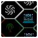
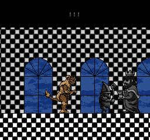

Wrong Way Wrong Way |
 Capturas viejas Capturas viejas |
THE BOARD |
|---|
Aquí están ideas y elementos que acabé descartando mientras hacía los capítulos de Wrong Way.
|
Para el prólogo y GLACIER no hay nada que haya descartado, ya que el primero fue solo una secuencia sencilla y en GLACIER ya tenía en mente
lo que quería hacer hace tiempo.
Por otro lado, en KRONE llegué a hacer un par de cambios, primero originalmente tenía en mente que, en el encuentro con el rey negro de BLACK & WHITE, este le lanzara su copa a KING CEASAR y saliera corriendo, para morir poco después. No llegué a hacerlo porque fui capaz de editar su sprite para parecer que estuviera lanzando algo o corriendo; por lo que nunca llegó a ser más que una idea. |
|  |
|---|
|
Y por otro está esta primera versión de la última captura del capítulo. No tiene mucho más, la cambié porque esta versión la hice a prisas. Puedes hacer clic para compararla con la versión final. |
|
Con NIHON si que puedo decir y mostrar más cosas. Primero, la idea original que tuve en mente hace años, junto a alguna de otros mundos que acabaré haciendo más adelante. El mundo simplemente sería llamado JAPÓN, tendría un tablero similar a LA TIERRA pero volteado, con los mismos tipos de niveles que NIHON y con GEZORA y un monstruo nuevo como jefes. Este nuevo monstruo sería como un VARAN azul con cola de serpiente en lugar de piernas y con la boca de un pez linterna, también tenía en mente que su pelea sería bajo el agua. Ya pasando a cosas descartadas, está esta pantalla del menú, que en vez de mostrar “continuar” la primera opción es “nueva partida”, lo cambié para dar a entender que la partida de Marta es una continuación directa a la de Carl. Como la anterior, haz clic para ver el cambio más transcendental que he llegado a hacer. |
|
En un principio iba a haber una pelea contra el ovni misterioso tras ser dañado, pero lo acabé descartando porque no se me ocurría algo interesante para la pelea. También la escena de los ovnis de fondo en un principio sería en un nivel de PRADERA, pero lo acabé cambiando a OCÉANO para que tuviera más presencia de fondo. También puedes hacer clic ahí. |
|
Esto no es material descartado, pero me hace gracia así que también lo muestro. He aquí una… plantilla (no sé cómo llamarlo) de cómo quería que se viera el CAÑÓN SATELITAL. |
 |
|
Y ahora, esta es la primera imágen de la cosa que observa a Marta… EL VIGÍA. Originalmente solo eran un par de ojos grandes en la oscuridad, ¿habéis jugado a RIBBIT? quería hacer los ojos como el del jefe final. Al final intenté hacer algo más que un par de ojos porque, uno, había gente que le convenció la idea cuando lo mostré por un server de discord, y dos, porque parece formar la silueta de la cabeza de Mickey Mouse. Por lo que decidí tirar por un camino más exagerado con la misma idea, al final no quedó tan mal. Por cierto, su “nivel” originalmente se llamaba “JUICIO” (El texto dice: “ENTONCES, DECIDES DEJAR ATRÁS ESTE MUNDO...”). |
|
Y, para terminar con NIHON, tenemos algo diferente. Veréis, una de las cosas que quería hacer para los nuevos capítulos de Wrong Way es que en cada nuevo mundo hubiera en algún momento un tema compuesto por mi. En este caso, el tema iría para el nivel CIUDAD CAPITAL, originalmente tenía en mente intentar hacer un cover sencillo de 8 bits del tema clásico de la peli del 54, pero al ver que no me salía bien, pasé a intentar hacer una versión más dinámica. Llegué a hacer un par de intentos con esta idea en mente, pero no avanzaba de la melodía principal y ningún acompañamiento que hiciera sonaba bien. Entre que el tema era lo único que me impedía empezar la edición y publicación del capítulo, que estaba cansado de trabajar en Nihon tras 2 o 3 meses irregularmente y que al final CIUDAD CAPITAL apenas aparecía, decidí simplemente utilizar para esa parte una versión del tema del 54, como tenía en mente desde un principio. En fin, aquí está lo mejor que pude sacar de mis intentos (el primero es mi favorito): |
|
Y, si quieres ver a un alguien a punto de entrar en sus 20 silbando a su móvil un intento de canción por un minuto y pico… pues aquí también lo tienes supongo. |